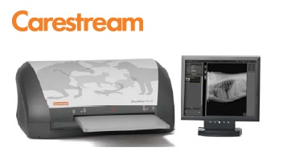
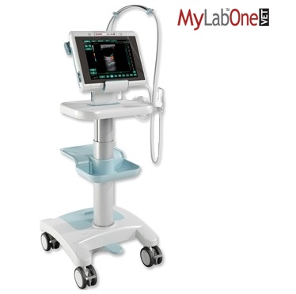

Clinica Veterinaria
Con un plantel de profesionales altamente capacitados, nuestro servicio clínico cuenta con un moderno equipamiento, instalaciones adecuadas, ambiente climatizado, apoyatura de laboratorio y equipos para diagnóstico rápido que permiten una atención veterinaria rápida, eficiente y certera.
 Nuestro sistema informático abarca todos los sectores de la veterinaria,
y esto posibilita el acceso a las historias clínicas en forma inmediata.
Nuestro sistema informático abarca todos los sectores de la veterinaria,
y esto posibilita el acceso a las historias clínicas en forma inmediata.
Al estar integrado a los equipos usados durante la atención de los
animales, el sistema permite que los resultados de los estudios
(imágenes e informes) sean enviados en el momento por Correo Electrónico
a los propietarios de las mascotas.
Diagnostico por Imagenes
 El servicio de diagnóstico por imágenes cuenta con un equipo radiológico de última generación que permite realizar estudios simples y contrastados de alta calidad. Nuestra sala de rayos respeta todas las normas de seguridad vigentes.
 Disponemos de moderno equipamiento de ultrasonido para realizar estudios ecográficos a distintas especies y razas.